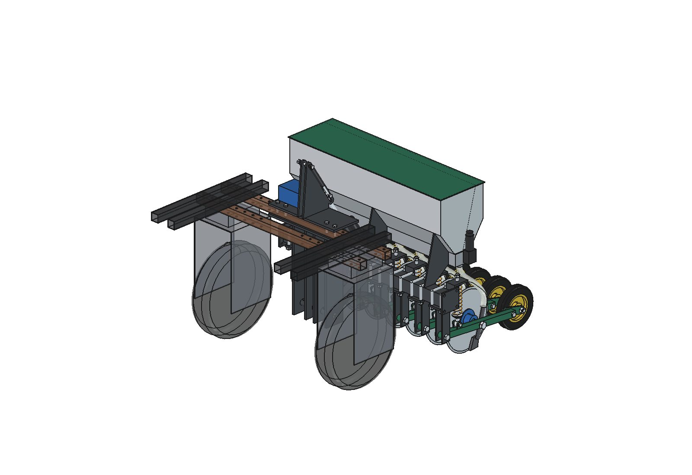
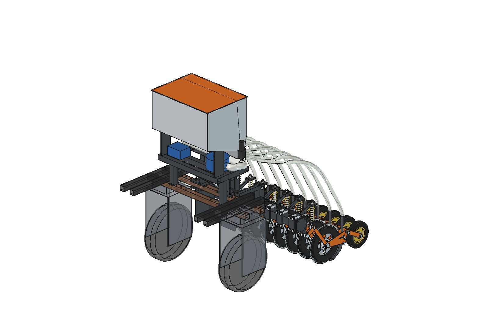
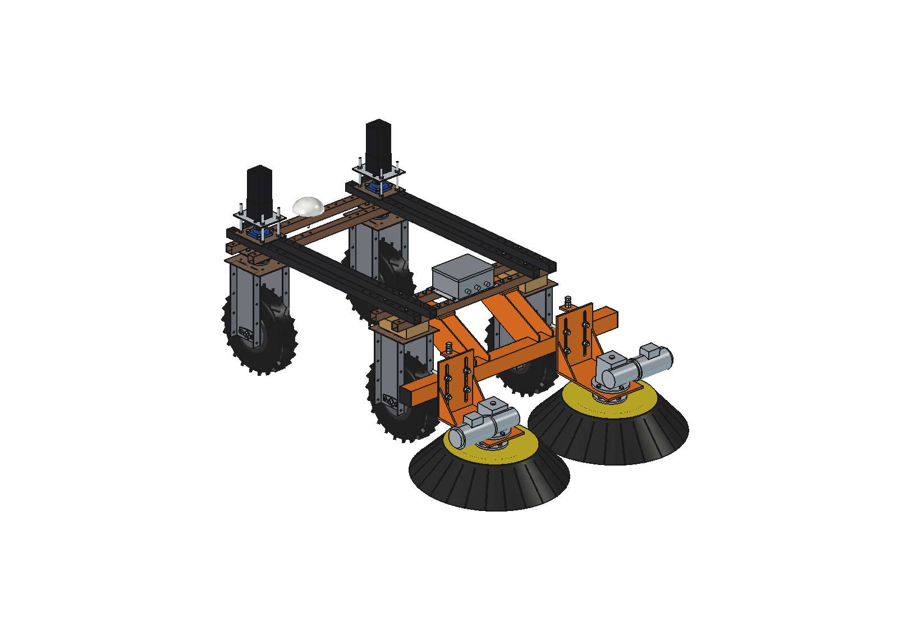
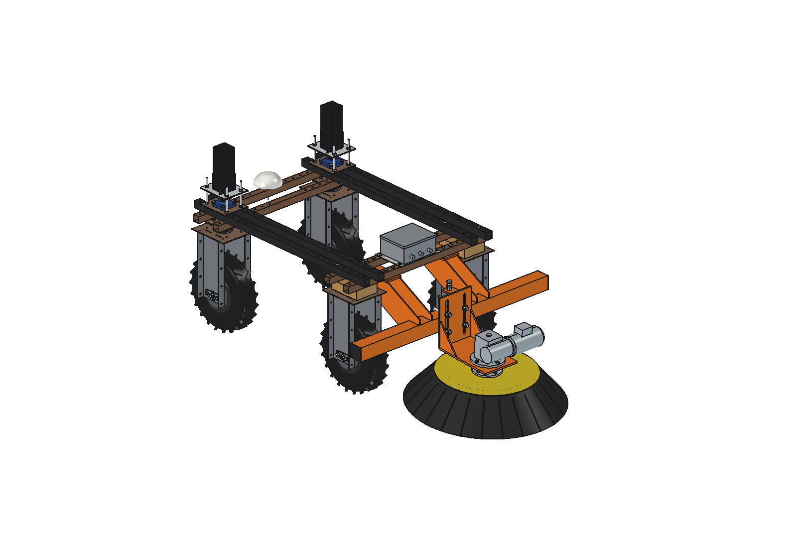
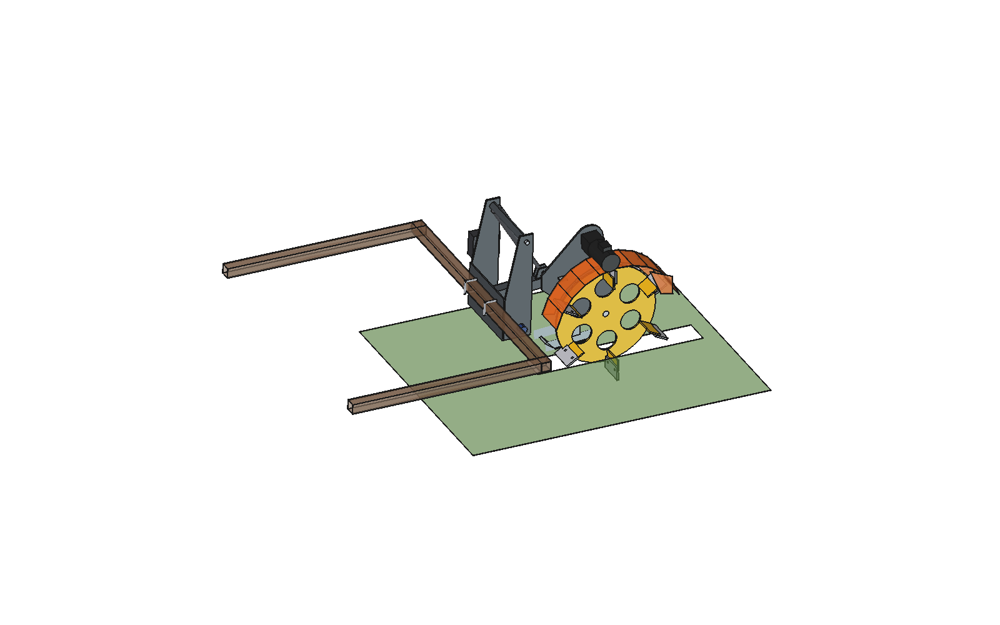
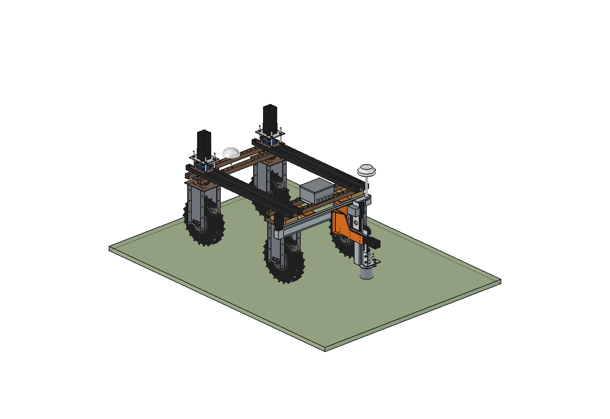
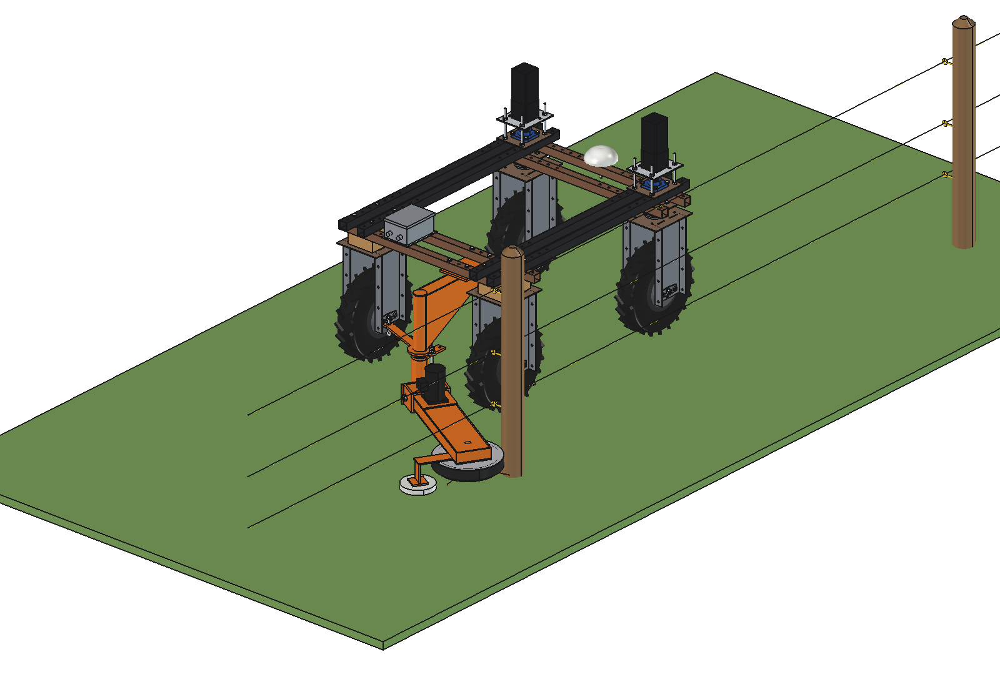
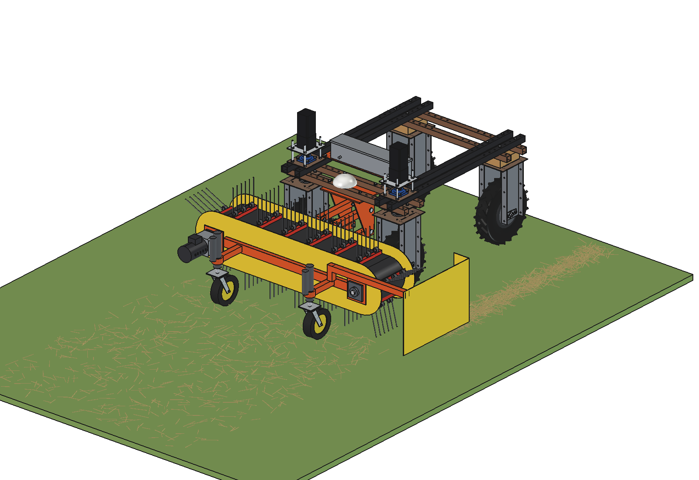
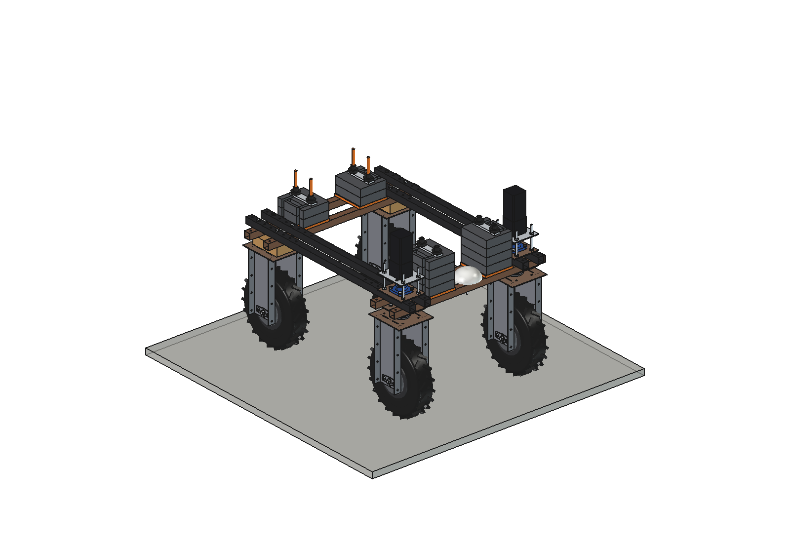
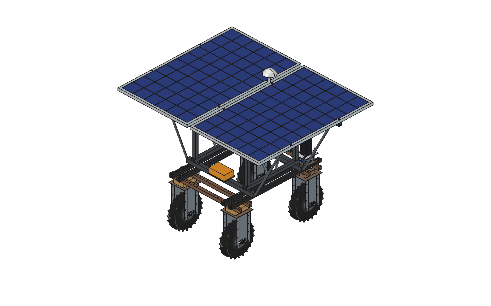

Implement · Spraying, Fertilizing & Irrigation
Liquid fertilizer applicator
Injects liquid fertilizer (such as RENURE) just under the sward, without mist or drift. Five injection elements at 200 mm; each element follows the ground on its own arm.


Bruut OpenAgbot
Overview of all implements for the Bruut OpenAgbot: the 46 that are worked out in FreeCAD, with every variant on its own page, followed by the 24 ideas from the website that are not worked out yet.
Implement · Sowing & Planting
Grassland slit seeder. 1 m modules with 8 rows at 125 mm and coupling flanges. A thin disc cuts a 15 mm slot, the seed is placed about 12 mm deep and a sprung press wheel closes the slot. Every row follows the ground on its own arm; two gas springs push the floating lift frame down with robot weight.


Overseeder · variant 1 of 2
Angled single disc (7°, Ø300 × 3) with a seed boot in its lee and a depth ring. Gravity-fed seed hopper with a compartment for grass (41 l) and one for fine seed (18 l), each with its own cam roller and a motor that follows the driving speed. Built on the headstock and lift frame of the simple applicator v2.
Overseeder · variant 2 of 2
Parallel linkage so the toolbar stays parallel, straight Ø300 × 3 disc with depth rings on both sides, a curved seed coulter directly behind the disc and a press wheel in a fork. Air seeder (62 + 17 l hopper, 12 V fan) on a frame above the rear axle blows the seed through 8 hoses to the coulters.
Implement · Spraying, Fertilizing & Irrigation
Injects liquid fertilizer (such as RENURE) just under the sward, without mist or drift. Five injection elements at 200 mm; each element follows the ground on its own arm.
Liquid fertilizer applicator · variant 1 of 3
Cheap and robust: 5 fixed injection knives with a stainless steel tube, two wheelbarrow wheels as depth wheels, a lift frame with a single low pivot and one cheap linear actuator, a 12 V diaphragm pump with fixed regulator and orifice plates. Only flat bar, tube and standard parts.
Liquid fertilizer applicator · variant 2 of 3
Simple version plus a flat coulter disc Ø300 in front of each knife, cutting 45 mm deep; the knife runs 14 mm behind it in the same plane. Costs 26 kg extra on the lift frame (70 kg), a 1500 N actuator and up to 50 kg of ballast in hard sward.
Liquid fertilizer applicator · variant 3 of 3
Disc, knife, tube and press wheel per element on spring arms; a 5-channel peristaltic pump driven by a worm-gear motor whose speed follows the robot's driving speed, and an electrically lifted parallel linkage that floats while working (slotted hole). No ground wheel.
Implement · Transport & General
Pushes feed back to the feed fence. Sits at the back of the robot; the robot drives with the auger first. The auger picks up the pushed-away feed and carries it sideways to the fence.


Feed pusher auger · variant 1 of 2
Cheap version from flat plate and sectional flights; DXF files for the side plate and the flight ring.
Feed pusher auger · variant 2 of 2
Ø320 auger under a 2 mm folded hood with 4 bends. Foot-mounted gearmotor on top of the hood, 08B-1 chain with tensioner along the left side plate. Mounted with 4 arms on the rear flange holes of the rear wheel modules. Open discharge end. Includes a feed-transport model and a force animation.
Implement · Transport & General
Sweeper disc brushes for loose material on concrete. Each brush on its own 48 V worm gearmotor (NMRV063, 550 W); reversing the motors makes a windrow in the middle or spreads material wide. Mounted on an 80 × 80 toolbar under the rear beams with U-bolts. Includes an animation with a particle model.


Disc brushes · variant 1 of 3
Two Ø750 brushes (standard). Working width 1.50 m with brushes touching to 1.70 m with 200 mm between them. Spread wide or make a windrow.
Disc brushes · variant 2 of 3
Two Ø650 brushes: the same job, narrower and lighter.
Disc brushes · variant 3 of 3
One Ø850 brush covering the robot's own width, sweeping the strip in front of the robot to one side.
Implement · Soil Cultivation & Weed Control
Finds a dock plant (broad-leaved dock) and mills out its root on a CNC gantry, chemical-free.

Dockweed drill · variant 1 of 1
Dock removal mill on a two-axis CNC gantry. Renders, animations, DXF and STEP files. An older single-script design (dockweed_design.py).
Implement · Soil Cultivation & Weed Control
Wheel trencher for cutting narrow trenches.

Trencher · variant 1 of 1
Wheel trencher mounted on the Bruut. Renders and STEP export. An older single-script design (trencher_design.py).
Implement · Measuring & Sensors
Stakes out points from a coordinate list (piles, posts, planting positions, plot corners). The robot stops roughly behind the point; an XYZ stage puts a spray-paint head exactly on it.

Field marker · variant 1 of 1
Three bought linear modules: X 800 mm belt module, Y 200 mm and Z 300 mm ball screws. Paint head: upside-down marking-spray can in a PVC drain pipe pushed by a servo; sprung PVC 110 shroud with an inductive sensor finds the ground. Second GNSS antenna on a mast straight above the nozzle.
Implement · Spraying, Fertilizing & Irrigation
Support robot that brings liquid (and in concept seed, granular fertilizer, water, batteries) to the working robots, so they never leave the field.


Mobile refiller · variant 1 of 5
268 l T-shaped tank with a pump below the liquid level, a slewing boom with a trolley and a spout, an RTK antenna on the spout and a camera for confirmation, and a powered trailer of 246 l (6 driven wheels). Tops up the working robot in the straight reverse of its headland turn while both drive.
Mobile refiller · variant 2 of 5
A standard 1000 l IBC set on with pallet forks, pump under the IBC, a fixed mast with a hanging hose and the RTK antenna above the nozzle. The working robot skips passes so every turn is a U-turn; the refiller stands inside the turn and the robot stops ≈ 13 s under the nozzle; 1 m further per refill.
Mobile refiller · variant 3 of 5
Single-axle trailer for one or two 1000 l IBCs, parked on the headland by a tractor. Control box (pump, battery, controller, RTK receiver, radio) on the A-frame drawbar and a mast with swinging arm, drop pipe, drip-stop nozzle and RTK antenna straight above the nozzle.
Mobile refiller · variant 4 of 5
Standard two-axle flat bale wagon (8 × 2.48 m) with 6 IBCs, two across. Only two holes in the deck and two box hangers; suction header along the deck, control box under the deck, mast on a skid at the rear left corner.
Mobile refiller · variant 5 of 5
Welded frame on four legs for one 1000 l IBC, picked up on a category 2 three-point linkage and set down on the headland. The mast doubles as the hitch tower; control box under the platform.
Implement · Mowing
Mows the strip under an electric fence and goes around the posts by itself.

Around-pole fence mower · variant 1 of 1
Trailing swing arm on a post behind the right rear wheel, held on a rest stop by a spring. A Ø400 nylon-string head under a PE-pipe guard ring slides around each post. 48 V BLDC motor at the root of the arm, V-belt inside the arm to a bought lawn-tractor deck spindle; head 182 mm high on an HDPE skid. No sensor, no actuator, no software.
Implement · Mowing
Tops thistles, ragwort and dock above the grass and gathers them in one windrow, no bin. Ragwort in particular has to leave the field.

Weed picker · variant 1 of 1
Twin-rotor mowing deck in front of the robot: two rotors with free-swinging blades (Ø510, 990 mm cut) turn inwards and throw the chopped weed out of a centre opening as a windrow ≈ 320 mm wide. Each rotor: 48 V BLDC motor on a lawn-tractor deck spindle; the left rotor runs 24 mm higher. Cut height 100–400 mm from a 4000 N actuator on a parallel linkage, with a float link for humps.
Implement · Mowing
Mows grass with double-knife cutter bars instead of rotating blades: a clean cut at low power, the grass left lying in a swath to dry. The bars follow the ground on their shoes.

Sickle bar mower · variant 1 of 1
Three double-knife bars: 1.25 m in front of the robot on a parallel linkage with a float link and a roll pin, and two 1.0 m wings in the middle of the frame on a mid frame under the top beams. Each bar: upper and lower knife (50 mm pitch, stroke 50, 600 rpm), a crank gearbox with two cranks 180° apart so the knife forces cancel, and a 48 V 1000 W BLDC motor. The wings fold up with a 4000 N actuator each; the anchor slides in a slot so they float with the ground.
Implement · Spraying, Fertilizing & Irrigation
Irrigates grassland by flooding at low pressure from a pump at the ditch: little energy, no wind drift, no evaporation in the air.

Irrigation · variant 1 of 1
The robot carries a reel with 150 m of 3" lay-flat hose, lays it out empty, the petrol pump at the ditch floods a 4 m strip (outlets every 2 m), the hose runs empty and the robot winds it up again. Pinch rollers keep the reel dry and squeeze the last water out.
Implement · Soil Cultivation & Weed Control
Sprays weeds plant by plant instead of the whole field. A camera in front finds the weeds; the boom behind opens only the nozzles above a plant.

Spot sprayer · variant 1 of 1
Wide-angle global-shutter camera on a mast (1.48 m, 55° down) sees the whole strip from 1.8 m ahead; 2.65 s later 15 PWM nozzles at 250 mm on a stainless pipe open above the plant. Centre section 1.25 m and two 1.25 m wings that fold up in 3.2 s with a 24 V actuator each, also in the field. 120 l tank and diaphragm pump on the robot.
Implement · Soil Cultivation & Weed Control
Hoes inside two rows of broccoli (375 mm apart, wheels in the inter-rows). Camera under the front beams finds the plants 0.84 s ahead; knives swing out around each plant.


In-row weeder · variant 1 of 2
Two row units under the belly on parallelograms with gauge wheels in the robot's wheel track. A NEMA 23 closed-loop stepper with a 10:1 gearbox swings a 220 mm arm with a spring-steel finger and a flat knife 20 mm deep. Out in 98 ms, back in 148 ms; never closer than 50 mm to a stem.
In-row weeder · variant 2 of 2
Two knives per row (4 steppers) that open to both sides of each plant and close behind it, timed by the real distance to the stem. Each knife moves only 78 mm: out in 89 ms, back in 118 ms.
Implement · Soil Cultivation & Weed Control
Band rake in front of the robot: a rubber belt with 15 tine bars around two drums (1.52 m working width). Combs weed seedlings out of nursery beds between young trees or rakes moss and thatch out of grassland into one windrow.

Belt rake · variant 1 of 1
48 V 750 W gearmotor with a 20:1 planetary gearbox on the right drum. Two swivel castors on 24 V actuators carry the 110 kg rake, set the depth and lift it 100 mm for the headland; a free parallelogram pushes it.
Implement · Soil Cultivation & Weed Control
Pre-emergence flame weeder for freshly sown beds (carrot, onion, beetroot, parsnip): kills the emerged seedlings without moving the soil.

Weeds burner (flame weeder) · variant 1 of 1
Insulated 1.5 × 0.8 m hood behind the robot with 6 flat-flame burners (13 kg/h, 167 kW). Two 18 kg forklift cylinders with liquid withdrawal on the robot, a vaporiser coil in the hood, two main solenoid valves in series, a motorised regulator, pilots with igniters and flame sensors; the valves close at once when the robot stops.
Implement · Soil Cultivation & Weed Control
Front-mounted dozer / grader blade: pushes feed back to the feed fence, scrapes slurry and snow, grades soil and paths. Covers the manure scraper idea as well.

Push blade · variant 1 of 1
1100 x 450 moldboard on R700 with a bolted rubber edge (steel edge for soil), angle +-25 degrees on an M30 king pin with a lock pin, two lift arms on a front toolbar under the front lower beams, 24 V 1500 N actuator with a float slot.
Implement · Spraying, Fertilizing & Irrigation
Spinning-disc spreader for granular fertilizer (and granular lime with a coarser roller). Dose follows the driving speed and a task map.

Fertilizer spreader · variant 1 of 1
88 l PE hopper over and behind the rear axle on rails on the upper beams, fluted metering roller O80 on a 12 V gearmotor, vaned disc O400 on a 48 V BLDC motor behind the robot with a guard towards the robot. Optional 2 x 20 kg front counterweight.
Implement · Crop & Soil
Pasture harrow behind the robot: a levelling board spreads molehills and dung pats, two rows of spring tines rake out moss and work in seed. Covers the molehill spreader idea.

Grassland harrow · variant 1 of 1
1300 mm harrow on two lift arms from a rear toolbar (the push blade geometry, mirrored): angle-iron levelling board, 32 double spring tines O8 (a track every 37.5 mm), floats on the sward, lifted by a 24 V actuator.
Implement · Crop & Soil
Takes soil cores at GPS points with a gouge on a ball-screw Z axis in the middle of the robot and collects 40 cores per plot in a cup of a 10-cup carousel.

Soil sampler · variant 1 of 1
SBR20 rails and an SFU1605 ball screw with a NEMA23 on a mast plate between two bridges on the upper beams, O25 gouge with ejector, sprung foot, swing chute and funnel, carousel of 10 cups of 1.3 l.
Implement · Soil Cultivation & Weed Control
Single-axis guided hoe behind the robot for row crops such as maize: two hoe units in the inter-rows behind the wheels, kept on the rows by a camera-steered ball-screw side shift.

Inter-row hoe · variant 1 of 1
Rear toolbar and lift arms of the grassland harrow (3000 N actuator), carrier with 2 HGR15 rails, 8 mm shift plate moved +-75 mm by an SFU1610 ball screw and a closed-loop NEMA23. Two parallelogram units with a gauge wheel O250, a goosefoot 250 and two L-blades (550 mm per inter-row, 100 mm band each side of the row). Camera on a mast above the middle row.
Implement · Soil Cultivation & Weed Control
Slitter aerator in the middle of the robot, between the axles: a passive roller with star discs cuts slits into grassland, pressed in by frame weight and ballast, both axles sharing the reaction.

Grassland aerator · variant 1 of 1
2 bridges on the upper beams, side arms on pivots outside the steering sweep, roller with 8 stars of 6 slitting knives (O450) in 2 UCFL208 bearings, cross beam with 4 x 20 kg ballast, 24 V 2000 N actuator from a mast on the rear bridge (lifts 14 degrees, can press).
Implement · Transport & General
Category 0 three-point linkage at the rear with two electric lift rods, so standard sub-compact implements can hang on the robot. Drawn with a small 5-tine cultivator, which covers the small cultivator idea.

Three-point hitch · variant 1 of 1
Rear toolbar of the grassland harrow with lugs for 2 lower links (50 x 20, O16 pins, 500 spacing), a top link bracket and 2 x 24 V 3000 N actuators as lift rods with a slotted eye (the implement floats). Demo implement: 1.0 m cultivator, 5 S-tines with duckfoot shares, 2 gauge wheels.
Implement · Transport & General
Flat deck on the upper beams for 8 harvest crates, carried from the rows to the field edge following a picker (UWB) or on an RTK route. The same deck carries tools and material (covers the tool cart idea).

Crate carrier · variant 1 of 1
3 bearers across the upper beams, side rails and 18 mm plywood (1300 x 1000, loading height 757), angle guides, divider, mesh headboard in front of the crates, 2 ratchet straps; 2 UWB anchors, a stop/go/follow box and the GNSS antenna moved to a mast above the stack.
Implement · Transport & General
Stackable 11 kg ballast plates on the lower cross beams, front and rear, to keep enough load on the front axle with rear implements (and on the rear axle with the push blade).

Counterweights · variant 1 of 1
Per stack (4 stacks): a 15 mm base plate on the two lower beams with 2 M16 studs, up to 4 plates of 170 x 200 x 50 with open slots that slide on from the side, a clamp bar and 2 knob nuts. Fits together with the push blade and the rear toolbar.
Implement · Power & Drive
Two exchangeable 48 V LiFePO4 pods (2.56 kWh each) hanging under the upper beams between the wheels: low, centred, and free of all toolbars and decks.

Battery pack · variant 1 of 1
Per side: 2 hangers (flat bar 40 x 8, M10 through the upper beams) and an aluminium pod with 16 LiFePO4 cells 50 Ah, a 16S BMS, hook strips, latches, handles and an Anderson SB50 connector.
Implement · Power & Drive
Roof of solar panels on a tube frame above the robot that charges the battery through an MPPT controller and carries the GNSS antenna.

Solar canopy · variant 1 of 1
2 panels 1000 x 1650 mm (320 Wp each, 3 possible) on a steel tube frame: base tubes on the upper beams, 4 posts, top rails and cross members, diagonal struts to the overhangs; MPPT box, GNSS antenna on a mast between the panels.
Implement · Spreading & Bedding
Bin on the upper beams with a moving floor belt and a beater behind the robot: top-dresses beds, orchard strips and grassland with compost in an even 1.1 m layer, dose from the belt speed.

Compost spreader · variant 1 of 1
299 l bin (150 kg payload) on 3 bearers, floor belt 920 wide on a UHMW slide bed round 2 drums O100 driven by a 24 V worm gearmotor, slide gate 30..150 mm, paddle beater O280 at 300 rpm on a 48 V 1 kW BLDC with a poly-V belt and a deflector hood.
Implement · Crop & Soil
Mid-mounted under the robot between the axles: a 1 m tine rotor flicks stones over a comb into a sieve basket, on a parallelogram lift; the floor drops open at the heap.

Stone picker · variant 1 of 1
Rotor O114 with 48 double spring tines (tip radius 150, 20 mm deep) on a 48 V 750 W gearmotor at 250 rpm, comb of 12 mm bars, 40 l basket with a sieve floor (25 mm gaps) opened by a 24 V actuator, frame on 4 swing links outside the wheel line lifted 100 mm by one 1500 N actuator.
Implement · Crop & Soil
Category 0 implement for the three-point hitch that lays 1.2 m mulch foil over the bed behind the robot: press wheels push the edges down, angled discs bury them.

Mulch layer · variant 1 of 1
Frame with a 60 x 60 toolbar, A-frame mast and 50 x 50 side beams on the hitch of three point hitch/simple (imported), foil roll O200 x 1200 in open V-holders with a band brake, guide bar, 2 semi-pneumatic press wheels O250 on the edges and 2 concave covering discs O350 at 22 degrees, 50 mm deep.
Implement · Measuring & Sensors
Maps grass cover while driving: front boom with 2 active NDVI sensors, a lidar and a camera, plus a sledge plate meter between the axles for compressed height and dry matter. Covers the NIR sensor idea.

Grass meter · variant 1 of 1
Boom 1300 on two flat brackets on the front outer lower beam (above the tyres), 2 active NDVI sensors at x +-550, a lidar and an RGB camera; plate 0.1 m2 at 5 kg/m2 on a 350 mm parallelogram from a post under the upper beams, angle sensor on the pivot, 24 V actuator to lift it.
Implement · Measuring & Sensors
Automatic cone penetrometer in the middle of the robot: a ball-screw Z axis pushes an ASABE cone at 30 mm/s to 600 mm, a load cell reads the force; compaction maps per depth layer.

Soil compaction meter · variant 1 of 1
Bridges, mast, SBR20 rails and SFU1605 screw as the soil sampler (mast z 120..1150 with stays), S-type 2 kN load cell, rod O9.5 x 700 with a 30 degree cone O12.83, sprung foot with a PTFE rod bush and a capacitive moisture probe.
Implement · Power & Drive
Fixed docking station at the field edge or in the shed: the robot drives in and charges through sprung copper contacts (the contact version of the wireless charging dock idea).

Charging dock · variant 1 of 1
Robot side: a 3.9 kg contact bracket on the front outer lower beam with 2 sprung copper pads and a pilot pin. Station: base plate with ground anchors, post with a 48 V 1 kW IP65 charger and a roof, an arm back between the front wheels to a PE contact head with 2 wide copper bars and a V-funnel.
Implement · Weed & Crop Protection
Reflecting hood with 6 UV-C lamps under the robot between the axles: drives over the bed at night and gives a low UV-C dose against powdery mildew, without chemicals.

UV-C mildew light · variant 1 of 1
Aluminium hood 580 x 440 on 4 slotted hangers from 2 bearers on the upper beams, rubber side skirts and brush curtains, 6 compact UV-C tubes (PL-L 55 W class) behind guard wires, ballasts and interlock in a box on the rear bearer.
Implement · Spreading & Bedding
Bedding spreader for cubicles: a 308 l bin with an auger across the robot feeds a spinner on the right side that throws sawdust, chopped straw or a lime mix into the cubicles from the alley.

Sawdust spreader · variant 1 of 1
Bin 2 mm with 45 degree walls to a trough on 2 bearers on the upper beams, auger O150 across the robot on a 24 V worm gearmotor, spinner housing outside the right outer upper beam with a O320 disc (4 vanes, 350 rpm) open to the right.
Implement · Livestock & Farm
Cubicle groomer on a side arm: reaches from the alley over the curb, under the divider loops, with a tine rotor along the bed that loosens and levels the bedding in the rear metre of each cubicle.

Bedding rake · variant 1 of 1
Plate bracket with pivot lugs on the right outer upper beam, arm 60 x 40 from a pivot above the beams down past the curb and out over the bed, tine rotor O240 x 970 along the bed on a 48 V 400 W gearmotor, 24 V actuator across the robot top to a crank lifts the arm 40 degrees. A row of cubicles is modelled for the checks.
Implement · Transport & General
Tipping skip on the upper beams: a 353 l steel bin hinged at the rear end of the robot, tipped backwards to 48 degrees by two actuators so the load slides out behind the rear wheels.

Dumper barrow · variant 1 of 1
3 bearers on the upper beams (rest pads, actuator lugs, hinge lugs), subframe of 2 rails 40 x 40 with hinge bosses and a cross tube, 2 mm bin 900 x 1020 x 350 with a 30 degree rear lip, 2 x 24 V 3000 N actuators (stroke 300).
Implement · Weed & Crop Protection
Releases predatory mites and parasitic wasps (in bran, vermiculite or sawdust) over two rows: 2 hoppers with metering wheels and a blower that carries the product through hoses to deflector nozzles.

Biocontrol spreader · variant 1 of 1
Bearer across the upper beams with 2 PE hoppers of 7.9 l (agitator, NEMA17 metering wheel) over the rows at x +-187.5, a 24 V 60 W centrifugal fan, venturis, hoses O40 and deflector nozzles 450 mm above the ground.
Implement · Transport & General
Two-wheeled trailer on the 50 mm tow ball of the cambridge roll (hitch, coupling and drawbar imported): a plywood deck with boards and a drop tailgate for 12 bags of 25 kg.

Bag trailer · variant 1 of 1
Frame of 40 x 40 rails and cross members behind the cbr cross beam and drawbar, plywood deck 1110 x 1410 at 358 mm with side and front boards and a drop tailgate, axle tube on hangers, 2 x 4.00-8 wheels with mudguards.
Implement · Transport & General
Front angle broom on the push blade's toolbar, lift arms and king pin (imported): a roller brush O400 x 1000 under a hood, 48 V belt drive, on 2 castors, angled +-25 degrees to throw the material aside.

Broom / sweeper · variant 1 of 1
Head frame with the swivel plate, cross beam 80 x 60 and 5 mm end plates, PP brush O400 x 1000 in UCFL 208 bearings at 400 rpm, 48 V 1000 W gearmotor with an HTD belt, aluminium hood and rubber flap, 2 swivel castors O125; 3000 N version of the blade actuator.
Implement · Spraying, Fertilizing & Irrigation
Drop spreader for granulated or ground lime: a 178 l V-hopper centred over the robot, a trough auger to a 1.3 m cross auger behind the rear wheels that lets the lime fall through a row of holes inside a rubber dust skirt.

Lime spreader · variant 1 of 1
Rails on the inner upper beams, steel V-hopper down between the beams to a U-trough, trough auger O100 in a tube under the rear lower beams, cross auger O100 x 1300 with 25 outlet holes O20 and flights from the middle outward, 2 x 24 V worm gearmotors, rubber skirt 20 mm above the ground.
Implement · Crop & Soil
Sows a cover crop into a standing 2-row crop: a 28 l hopper with 3 fluted metering cells feeds hoses to fishtail deflectors in the free middle inter-row and behind both rear tyres; spring tines on a bar high over the crop cover the seed.

Cover crop undersower · variant 1 of 1
Bearer across the upper beams with a PE V-hopper, aluminium metering housing with 3 fluted rollers on one 12 V speed-following shaft, hoses O32 routed over the crop rows, fishtail deflectors 40 mm above the ground, tine bar at 430 mm on 2 hangers under the rear lower beams with 7 spring tines O8.
Implement · Spreading & Bedding
Lays a straw mulch strip in the free middle inter-row: 2 small bales on a slatted floor chain are fed against a spiked shredder drum, the loose straw falls through a chute to a 160 mm outlet between the crop rows.

Straw spreader · variant 1 of 1
2 bearers and 2 rails on the upper beams, slatted floor of 2 chains 08B in UCP 204 shafts with a 24 V gearmotor, aluminium bale chamber, spiked drum O320 at 250 rpm on a 48 V 750 W motor in a 3 mm housing, aluminium chute to z 300.
Implement · Weed & Crop Protection
Spot electric weed control in the free middle inter-row: a camera finds weeds, a 5 kV generator switches on a comb of spring-steel fingers only while a weed is under it, the current returns through a coulter disc.

Electric weeder · variant 1 of 1
Bearer on the upper beams with the HV box and beacon, post with a parallel-arm lift (24 V actuator), PE holder with 9 spring-steel fingers and rubber curtains, coulter disc O250 as earth return, camera under the inner front lower beam.
Implement · Transport & General
48 V hydraulic power unit on the rear half: BLDC motor with a 4 cc gear pump (11 l/min, 150 bar), 16 l tank, 2-section solenoid valve block and 2 pairs of ISO-A quick couplers for hydraulic implements.

Hydraulic power pack · variant 1 of 1
2 bearers and a 5 mm base plate on the upper beams, 16 l steel tank with return filter, BLDC 48 V 3.5 kW with bell housing and group-1 gear pump, motor controller, valve block with relief valve, gauge and 2 double-acting 24 V sections, couplers screwed into its rear face.
Implement · Spraying, Fertilizing & Irrigation
Direct pump from ditches and ponds: a self-priming 1.5" pump on a 48 V 1.5 kW motor with an 8 m suction hose on a reel, delivering to a Camlock coupling at the rear; mount of the hydraulic power pack.

Irrigation pump · variant 1 of 1
Bearers and base plate from the hydraulic pack, self-priming centrifugal pump with priming chamber and BLDC 1.5 kW, reel O520 with 8 m of spiral suction hose, rotary union and strainer with foot valve, discharge to a 1.5" Camlock at the rear edge.
Implement ideas
24 attachments from the website's list that have no model yet. Each has a folder in implement ideas/ with a README.md describing what it does, so it can be worked out later.
Idea · Soil Cultivation & Weed Control
Not worked out yet
Boom with individually controlled injectors that fire single coarse droplets on demand at low pressure. Every droplet is placed straight onto the weed, which practically eliminates drift and cuts chemical usage to a fraction of a conventional spray pass.
Same carrier as the spot sprayer (camera mast in front, boom behind), but with drop-on-demand valves instead of PWM flat-fan nozzles. Droplets are fired at the detected plant position, so the boom needs a finer position resolution along the boom than 250 mm.
Camera mast, tank, pump, folding boom and control box of the spot sprayer (spotspray unit/boom).
Idea · Sowing & Planting
Not worked out yet
Front-mounted unit that takes seedlings out of the tray and sets them out at the right spacing.
A magazine of trays above the front beams, a gripper or pin-picker takes one seedling per cycle and plants it in a dibbled hole. Spacing by the robot's odometry; the robot stops or crawls per plant.
XYZ stage idea of the field marker for positioning; camera and odometry of the in-row weeder.
Idea · Power & Drive
Not worked out yet
Generator or combustion engine mounted between the frame as an auxiliary power source for extra electricity or mechanical power.
A small generator (range extender) on a vibration-damped frame between the beams, charging the 48 V bus. Exhaust and fuel placement are the main design problems.
Frame mounting like the battery pack; the irrigation petrol pump is another engine use.
Idea · Power & Drive
Not worked out yet
Electric motors such as the Ego Power+ or Greenworks units to drive implements that need real power, replacing small petrol engines.
A standard interface plate for battery-powered garden-tool motors (their battery or the robot's bus via adapter), with a belt or shaft output to an implement. Gives a ready, cheap drive where a bought motor is easier than a custom 48 V BLDC.
Motor plates and V-belt drives of the around-pole mower and the weed picker.
Idea · Transport & General
Not worked out yet
Front or rear-mounted seat, with the option to widen the frame tubes at the sides.
A seat on a tube frame so a person can ride on the robot, and side extensions that widen the frame for wider implements. Needs a manual-drive mode and clear operator-safety rules.
Toolbar and hanger design of the disc brushes; tube sizes from the robot.
Idea · Transport & General
Not worked out yet
Protective enclosure or housing for the operator.
A light cabin or canopy on the frame with a seat. Only meaningful together with the seat and frame extension.
Seat & frame extension; top-plate pattern.
Idea · Cooperation & Swarm Operation
Not worked out yet
The robot works together with a drone as a mobile base station. The drone flies out from the platform, maps the plot from above and passes its imagery straight to the robot, which converts it into a driving and treatment plan. The drone charges and swaps batteries on the robot, so the pair can keep scouting and working alternately for a full day without anyone coming out to the field.
A landing platform on the robot's top plate with a charging contact or battery-swap mechanism, a data link to the robot computer and a way to align the drone on landing (RTK or visual markers). The plan generation reuses the task-map pipeline of the crop scanner.
Top-plate pattern; solar panel roof as an alternative platform; task-map pipeline of the grass meter and NIR sensor.
Idea · Cooperation & Swarm Operation
Not worked out yet
Several Bruut units work the same field as one swarm. The job is split into sections, the robots divide the passes among themselves and keep each other informed of position, progress and battery state, so they never overlap or cross. Capacity scales simply with the number of units instead of with machine size, work continues when one unit drops out, and the light platforms keep soil compaction low.
Mostly software: a job planner that splits the field into passes, shared position and progress messages over a radio link, collision avoidance by reserved corridors, and hand-over of a pass when one unit drops out. The mobile refiller already works with a working robot, which is a two-unit special case.
The pass pattern of the mobile refiller (simple) and the headland-turn animations of the agbot slim.
Idea · Crop & Soil
Not worked out yet
Finds and maps molehills (and with a probe, mole tunnels) so they can be treated or spread flat later.
A camera looking down finds fresh hills; each gets a GPS point. A probe or an acoustic sensor could later detect tunnels. The map feeds the molehill spreader or a trap placing action.
Camera and detection pipeline of the spot sprayer; GPS logging of the field marker.
Idea · Transport & General
Not worked out yet
A speaker on the robot that can speak: warnings when the robot approaches, status messages for the operator, instructions in the field, and a way to speak to people near the robot.
A weatherproof loudspeaker (or a pair, front and rear) on the top plate or mast with a small amplifier, fed by the robot computer. Text-to-speech for messages such as 'robot is turning', 'tank empty' or 'battery low'; optionally a microphone and a radio link so an operator can speak through the robot. Volume follows the distance to detected people.
Top-plate pattern and mast mounting of the spot sprayer and the field marker; computer and radio link of the mobile refiller.
Idea · Weed & Crop Protection
Not worked out yet
Kills individual weeds with a laser or a focused UV beam, without chemicals and without moving the soil.
Camera finds the weeds (as in the spot sprayer), a galvo mirror aims the beam at the growing point. Needs a shroud against stray light and an interlock, and mostly works on small seedlings.
Camera mast and detection of the spot sprayer; shroud and safety interlock ideas of the weeds burner.
Idea · Weed & Crop Protection
Not worked out yet
Kills weeds with hot steam or hot foam under a light hood, as an alternative to the flame weeder.
A small boiler or heat exchanger with a hood. Hot foam holds the heat on the leaf longer than steam alone. Electric heating is possible but needs a lot of power, so it may stay a small-area tool.
Hood, heat shield and castors of the weeds burner; water tank from the mobile refiller concept.
Idea · Weed & Crop Protection
Not worked out yet
Visits insect traps and pheromone dispensers at the field edge: checks them with a camera, counts catches and swaps dispensers on schedule.
A small arm or an XYZ stage that opens a trap, photographs the catch and replaces the lure. The robot stops at stored trap positions.
XYZ stage and camera ideas of the field marker; trap positions kept like the marker's point list.
Idea · Livestock & Farm
Not worked out yet
Drives along the fence, checks the electric fence, reports breaks and shorts and straightens leaning posts.
A sensor arm along the wire to measure voltage and current, a camera for posts and a simple push or pull tool for leaning posts. Reports position of every fault.
Around-pole fence mower arm and post-following geometry; fence voltage meter idea.
Idea · Livestock & Farm
Not worked out yet
Visits drinking troughs, measures the water level, tops it up and reports dirt or damage with a camera.
A mast with a level sensor, a camera and a small refill nozzle on a hose; the robot parks at stored trough positions. Water from a tank on the robot or a nearby tap.
Nozzle and docking approach of the mobile refiller (simple); camera mast.
Idea · Livestock & Farm
Not worked out yet
Scrapes or pushes manure and slurry on stable floors and walkways toward a drain or gutter.
A flexible blade or rubber scraper at the front or back, as a variant of the push blade, with a stainless finish. Runs on a schedule on set routes.
Push blade idea, feed pusher auger mounting on the rear wheel brackets.
Idea · Livestock & Farm
Not worked out yet
Drives through a poultry house to turn the litter, collect floor eggs, and check birds and climate with sensors.
A small low variant with a litter-turning tool, a soft-brush egg collector and sensors for ammonia, temperature and humidity. Must be quiet and slow around the birds.
Disc brush and drive from the brushes; camera and logging from the crop scanner idea.
Idea · Measuring & Sensors
Not worked out yet
Counts fruits, heads or plants with a camera and logs them per GPS position, so the harvest can be estimated and planned.
Cameras on a mast or in the row, an image model that counts and sizes the crop, and a yield map per row.
Global-shutter camera and detection pipeline of the in-row weeder and the spot sprayer.
Idea · Measuring & Sensors
Not worked out yet
Looks at the leaves close up, finds disease and pest damage early and stores a photo per plant with its position.
A camera (RGB or multispectral) on a low mast or sideways arm, with its own light so it works at night. The images feed a classification model; alerts go to the farmer. Combines well with the UV light and the biocontrol spreader.
Camera and lighting of the in-row weeder; NIR sensor idea.
Idea · Measuring & Sensors
Not worked out yet
Places wireless soil moisture sensors at set GPS points, reads them out and picks them up again.
A drop tube or probe that pushes a sensor into the soil, with a small magazine of sensors. A reader on the robot collects values by radio on each visit.
XYZ stage and ground sensing of the field marker; irrigation hose reel for timing of the water.
Idea · Measuring & Sensors
Not worked out yet
Measures the voltage and current of the electric fence while driving along it and maps where the voltage drops.
A contactless sensor (capacitive or inductive) on the arm near the wire, with a GPS log per metre. Can ride on the fence mower arm.
Arm and post-following geometry of the around-pole fence mower.
Idea · Measuring & Sensors
Not worked out yet
Drives along hedgerows, windbreaks and orchard rows and logs gaps, damage, dead trees and growth with a camera.
A sideways-looking camera pair and a logging unit, producing a tree-by-tree status list with photos.
Camera masts of the spot sprayer and yield estimator.
Idea · Power & Drive
Not worked out yet
A robot on wheels that carries a large battery and charges working robots in the field, so they do not have to return to the shed.
A support robot like the mobile refiller, with a battery pack and a charging plug on a boom or at a fixed side. The working robot docks at a stop point, or charging happens in the headland turn.
Docking approach, RTK antenna above the connection and procedure of the mobile refiller; battery pack idea.
Idea · Measuring & Sensors
Not worked out yet
A mast with camera and thermal imaging that patrols the farm or field at night, reports intruders and keeps an eye on animals and equipment.
Mast with pan/tilt camera, thermal sensor and microphone; the robot drives a set route and alerts on movement. Combines with the speaker for warnings.
Camera mast of the spot sprayer; speaker idea; solar roof for power.